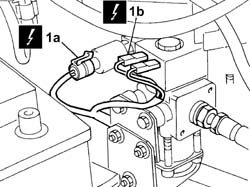
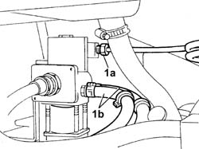
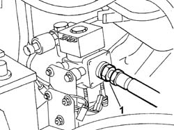
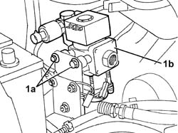

1044E10 CNG INJECTION SYSTEM PRESSURE REDUCTION UNIT - R R
- Path
- Procedures > 10 ENGINE UNIT > 1044 FUEL CIRCUIT PUMP/S AND DEVICES > 1044E GAS PRESSURE CONTROL DEVICE > 1044E10 CNG INJECTION SYSTEM PRESSURE REDUCTION UNIT - R R
- Kind
- repair procedure (removal / refitting; the operation number is the code)
- Applies to
- engines: 2.0 16V; all production periods
- Interactive page
- https://sloeber94.github.io/elrnDB-fDct/en/#/244000777
Applies to: engines: 2.0 16V; all production periods
 Removing
Removing
 Refitting
Refitting- Position the vehicle on the lift.
Op. 1042A02 METHANE SYSTEM SAFETY SET UP
- Drain the high pressure circuit drain operation as described in operation:
1. Disconnect the electrical connections of pressure sensor (1a) and methane cut-off solenoid (1b).

Applies to: engines: 2.0 16V; all production periods
1. Unscrew high pressure connector (1a) and disconnect both ooolant pipes (1b) from the pressure reduction unit.

Applies to: engines: 2.0 16V; all production periods
1. Unscrew the fitting and disconnect the low pressure hose from the pressure reduction unit.

Applies to: engines: 2.0 16V; all production periods
1. Undo bolts (1a) and remove pressure reduction unit (1b).

Applies to: engines: 2.0 16V; all production periods
Refitting
Removing- Fit the pressure reduction unit into its seat in the engine bay and tighten the retaining bolts.
- Connect the low pressure hose to the reduction unit
- Connect the high pressure connector and both coolant pipes to the reduction unit.
- Connect the electrical connections to the pressure sensor and methane cut-off solenoid.
- Move the CNG cut-off solenoid to open position and check system is working efficiently.
- Position the vehicle on the lift.